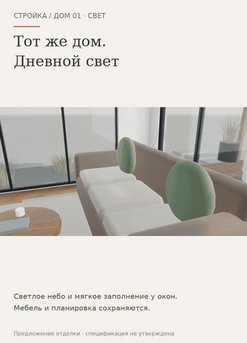

Один интерьер — разная атмосфера
Дневное заполнение у окон и тёплый вечерний свет в том же доме. Гостиная, столовая и спальня; выбранное оформление и положение посетителя сохраняются.
Открыть анимированную GIF-версию · Спальня вечером крупно
Если видео не открывается — показать GIF здесь

Открыть интерактивный прототип →
Предыдущий этап: мебель и проходы →
Монтаж настоящих экранов прототипа 19; не непрерывная запись и не замер FPS. Это художественное освещение, не расчёт освещённости или инсоляции и не подбор реальных светильников. Геометрия и навигация не менялись. Физический iPhone/Safari не проверен. Рабочий сайт и сервер не менялись.